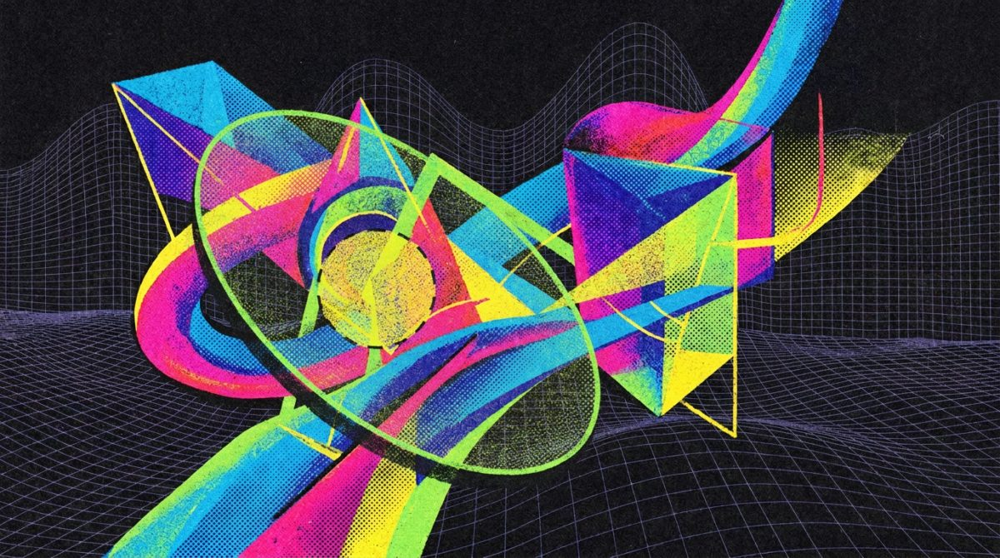
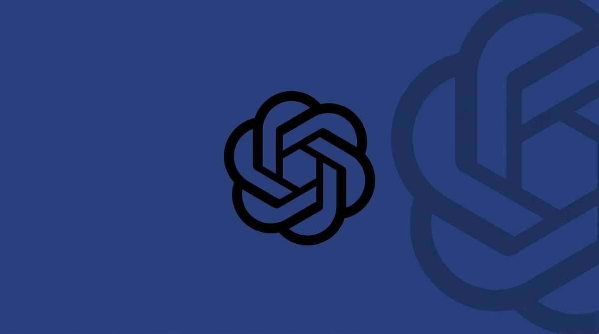

4 infos IA à retenir aujourd'hui

Ce qui compte, c'est qu'une IA fasse ce genre de maths
Le chercheur en complexité Scott Aaronson juge que prouver l'hypothèse de Riemann ne changerait pas le quotidien. Le vrai enjeu, selon lui, est que l'IA en soit capable. Il cite des preuves d'OpenAI sur la multiplication de matrices et la transformée de Fourier, avec des bornes inférieures, et pense désormais qu'une preuve de P ≠ NP n'est « pas loin ».

GPT-6.2 Astra : les limites tombent 40 % plus vite
Un bug de facturation avait donné de mauvaises remises sur Astra et Sol. Après correction, les limites sont atteintes 40 % plus vite sur Astra et 25 % sur Sol, par rapport à la semaine dernière. OpenAI ne facture rien de rétroactif et offre un « reset » supplémentaire aux abonnés Go, Plus, Pro et Business.

Inkling-2-Mini reste en tête des tendances
Modèle multimodal de Thinking Machines, 26 milliards de paramètres, licence Apache 2.0. Il compte plus de 6 300 likes. Sa version GGUF par Unsloth dépasse 2,4 millions de téléchargements.

Namazu Small : 30 milliards de paramètres qui battent un modèle de 120
Bâti sur Nemotron 3 Nano, il obtient 60,1 de moyenne sur 25 tests, contre 56,2 pour Nemotron 3 Super. Il brille en recherche web (BrowseComp 73,5), mais reste faible en connaissances brutes (SimpleQA 6,8). Scores publiés par Sakana, poids non publiés.